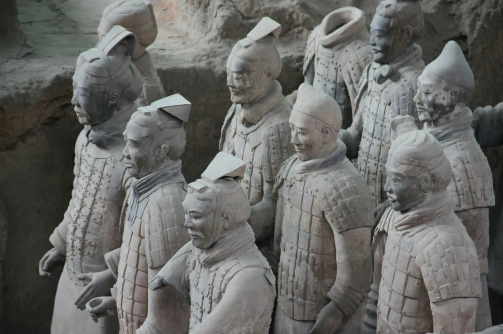

Xi'an Tour

Xi’An: Terracotta Army Museum, Huaqing Palace, and Perforamce
Explore the world-famous Terracotta Army and the romantic Huaqing Palace. Wander through local-favorite alleys, visit exquisite temples and mosques, and explore the local activities in the cityscape.
Price:From £160 per person
Book Now